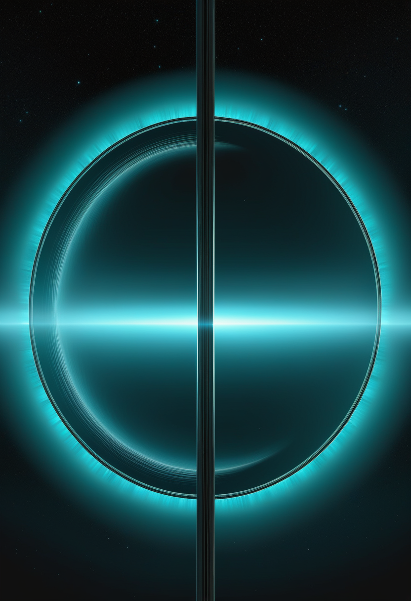
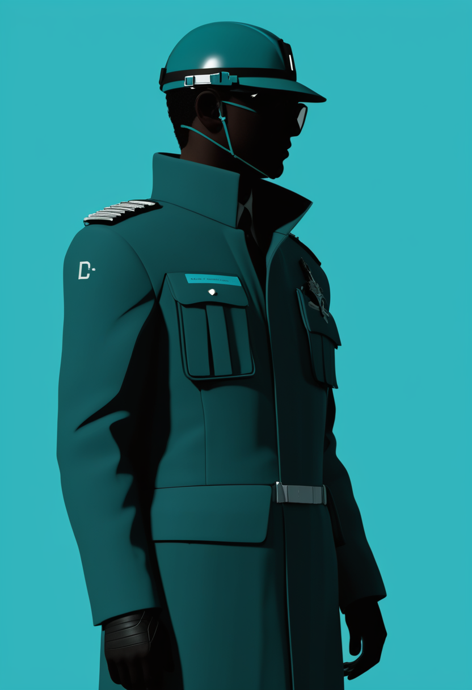
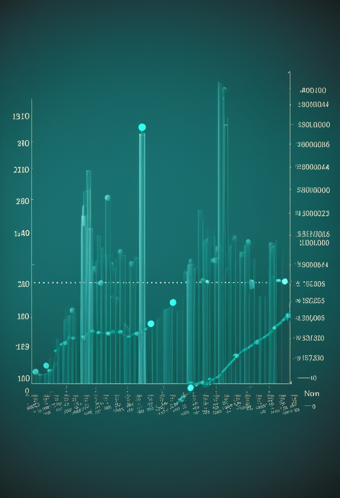
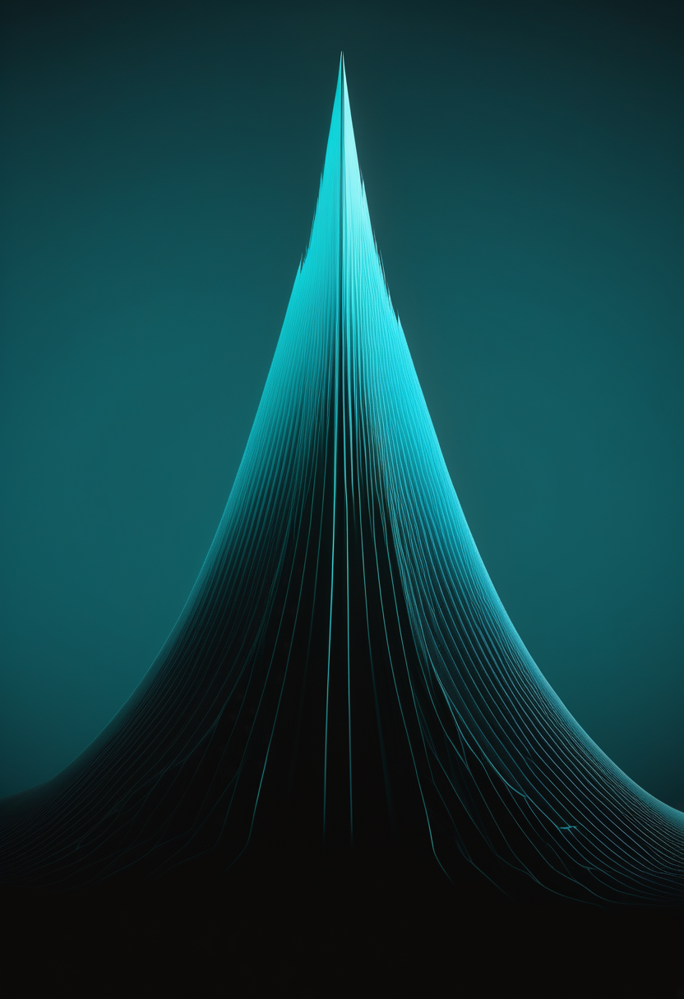

定規で引いたような十角形が、土星の南極に現れた
ハッブル宇宙望遠鏡の外惑星大気レガシー(OPAL)計画の観測で、南緯およそ58〜63度の帯に、1辺約16,800 kmの直線的な辺が10本並ぶ大気波が見つかった。これを描く風は時速約400 kmで流れ、構造は大気の複数の層にまたがる。北極の六角形は40年以上安定して知られてきたが、規則的な多角形のジェット構造が南半球で観測されたのは初めてである。2004年から2017年に土星を回ったカッシーニの画像には兆しがなく、ハッブルの年次観測を遡ると2023年から輪郭が現れ、いまも強まりつつある。報告は9月2日付のScience Advances。40年見てきた惑星に、新しい模様が生えた。

残る論点は製造だけ ― アピテグロマブ、PDUFAまで20日
9月9日、Scholar Rockが第12回Cantor Fitzgeraldグローバル・ヘルスケア会議に登壇した。同社の説明では、FDAが指摘する承認上の残る論点は製造コンプライアンスのみであり、有効性・安全性ではない。代替の充填・仕上げ施設はすでに確保している。PDUFA(FDAのアクション日)は9月30日で、本日から数えて20日である。承認されればSMAで初の筋を標的とする治療となる。同社は同時に、規制・製造・償還のリスクが残ることも示した。
アピテグロマブ、対象は乳幼児へ・剤形は自己注射へ拡大 ― Phase2 OPAL試験と皮下製剤
PDUFA判断を待つ承認薬そのものの適用拡大が、承認前から動き出している。Scholar Rockは、SMN1標的の遺伝子治療をすでに受けた、またはSMN2標的治療を継続中の2歳未満の乳幼児を対象とする第2相OPAL試験(NCT07047144)で、組み入れと投与を続けている。除外基準は不安定な栄養状態・胃管栄養への高い依存度、重度の脊柱側弯や直近の脊椎・股関節手術など運動評価を妨げる整形外科的要因である。同社はまた、自己または介助者が投与できる小容量の皮下製剤(自己注射器対応)の開発も並行して進めており、現行の点滴静注に加えた選択肢を用意する方向にある。
上乗せ療法が並ぶ ― 2026年に読み出す試験群
既存治療の上に何を足すかを問う試験が、同時に走っている。NMD Pharmaのignaseclant(NMD670)は、SMA3型成人52人を組み入れた第II相SYNAPSE-SMA試験の投与を完了済みで、2026年中に追加データが出る予定である。タルデフグロベプアルファは、ヌシネルセンまたはリスジプラムで安定投与中、あるいはオナセムノゲン・アベパルボベクの投与歴がある参加者への上乗せを、プラセボ対照で評価する設計である。遺伝子治療側では、EXG001-307の第1相用量漸増(生後1日〜2歳)が2026年12月完了見込みとされる。なお同じ抗ミオスタチン経路のRoche/Genentech製emugrobart(GYM329)は、MANATEE試験で一貫した改善を示せず今春に開発中止となっており、この経路の主導権はすでにScholar Rockのアピテグロマブへ一本化されている。
SMAの論点は薬効そのものから、適用範囲・剤形・そして周辺経路の整理へ移っている。アピテグロマブは製造という最後の関門を残しつつ乳幼児と自己注射へ裾野を広げ、上乗せ療法群は主戦場をNMD670とタルデフグロベプアルファに絞り込んだ。ミオスタチン経路の勝者は、退場した企業が出た分だけ輪郭がはっきりしてきた。
ドイツのBCI企業に2度目のFDAブレークスルー指定 ― 今度はカーソル操作
独CorTec GmbHは8月31日、埋め込み型BCI『Brain Interchange』について、FDAから2度目のブレークスルーデバイス指定を得たと発表した。対象は非進行性の四肢麻痺患者によるコンピュータのカーソル操作である。同社は4月にも脳卒中後の運動リハビリテーションを対象とする指定を受けており、世界のBCIとして脳卒中モーターリハビリでの指定は初だった。Brain Interchangeは完全埋め込み・無線・電池不要の双方向閉ループ型プラットフォームで、脳表を貫通しない非穿通型の皮質表面電極を使う。ワシントン大学シアトル校でのFDA承認IDE試験ではすでに3人に植え込まれ、Nature系のScientific Data誌に500日超の信号安定性が報告されている。今回の指定により、麻痺患者向けのコミュニケーション用途としてカーソル操作技術の規制承認を追求できるようになる。
発話復号の実力には、まだ2倍近い幅がある
麻痺患者の脳から発話を復号するAI手法の系統的レビューが2026年5月に公表された。分類課題の正解率は47.1%から90.0%、連続発話の単語誤り率(WER)は25.6%から58.8%まで分布する。実現可能性は示されたが、コホートによる差が大きい。視線入力の側でも研究の裾野を測る作業が進んでおり、2020年から2025年に発表されたアイトラッキング研究1,033本を対象とする科学マッピング研究が2026年2月に出ている。どちらも『できる/できない』から『どの条件でどれだけ』へ問いが移った段階である。
非侵襲・低侵襲のBCIが、脳卒中リハビリの次にカーソル操作という新しい適応を積み増した。一方で発話復号AIの成績はコホート次第で2倍近く揺れる。装置の許可が先に進み、性能の再現性はまだそれに追いついていない。

前号で「要確認」とした数字が、裏付けられた ― DRCエボラ
本紙が前号で単一報道として保留した保健省値を、ECDCが同じ値で確認した。9月7日報告(9月6日までのデータ)で確定6,686例・死亡3,226人、致死率は約48.3%である。前報告(9月6日、9月5日までのデータ)の6,604例・3,175人からの増分は+82例・+51人。新規82例の内訳はイトゥリ州39・北キブ州39・オー・ウエレ州4だった。前報告の内訳(イトゥリ49・北キブ31・オー・ウエレ2)と比べると、増分の総数は同じ82でも、北キブ州の取り分が31から39へ上がってイトゥリ州に並んだことになる。イトゥリ州の累計は5,365例・2,426人(致死率約45.2%)。隔離入院819人、回復1,563人、接触者追跡85.3%。

米国の麻疹は26年ぶりの水準、排除認定の審査は先送り
CDCの9月3日時点の集計で、2026年の米国の麻疹確定例は3,134例。2000年の排除宣言以降で最多である。約95%にあたる2,969例が集団発生関連で、その内訳は2026年に始まった流行から1,594例、2025年から続く流行から1,375例。入院は8%で、麻疹を基礎死因とする死亡は確認されていない。47の管轄から報告があり、2026年に新たに38件の流行が立ち上がった。米国とメキシコの排除認定の見直しは年内に予定されていたが、審査は遅れている。数字が記録を更新している最中に、その記録を評価する手続きのほうが止まっている。
西ナイル熱はカリフォルニアで死者6人 ― 山はこれから
全国値はCDC ArboNETの9月1日時点で407例・40州で、前号から変わらない。動いたのは州単位である。カリフォルニア州は9月4日までのデータで確定86例・21郡・死亡6人となり、1週間で+22例、5郡が今季初の症例を報告した。西ナイル熱の流行の山は例年8月下旬から9月であり、最も重い数週はまだ来ていない可能性が高い。ArboNETは9月8日時点まで更新されているが、本稿執筆時点で新しい全国合計は確認できなかった。
今日の3本は『数え方』の話でもある。エボラは総数が同じ+82でも州の取り分が変わり、麻疹は総数が記録を更新しても認定を見直す手続きのほうが止まり、西ナイル熱は全国値が動かないあいだに州の値だけが動いた。合計値だけを見ていると、流行の重心が移ったことに気づけない。
定規で引いたような十角形 ― 土星の南極
ハッブル宇宙望遠鏡の外惑星大気レガシー(OPAL)計画の観測で、土星の南極を囲む十角形の大気波が見つかった。南緯およそ58〜63度の帯に、1辺約16,800 kmの直線的な辺が10本並ぶ。これを描く風は時速約400 kmで流れ、構造は大気の複数の層にまたがる。北極の六角形は40年以上安定して知られてきたが、規則的な多角形のジェット構造が南半球で観測されたのは初めてである。2004年から2017年に土星を回ったカッシーニの画像には兆しがなく、ハッブルの年次観測を遡ると2023年から輪郭が現れ、いまも強まりつつある。報告は9月2日付のScience Advances。
嫦娥7号は2027年以降へ ― 前号の「日程未発表」が確定した
前号では『8月末の打ち上げ窓を逃し、8月23日時点で新しい日程が未発表』と記した。その後の報道で、8月24日に予定されていた長征5号による打ち上げが前日夜に中止され、年内の予定窓での実施を断念したことが確認できた。台風『ナルラ』による射場の悪天候が要因とされる。当局は『安全・信頼性・万全の原則に基づく総合的な分析と判断』の結果、嫦娥7号は今年の予定窓の条件を満たさないと説明した。実施は少なくとも2027年に持ち越される。月の南極シャクルトン・クレーター周辺で水氷を直接探す初の着陸計画であり、周回機・着陸機・ローバー・小型ホッパーの4要素で構成される。

軽すぎて、細すぎる ― LHCbの新粒子Bs0*(5700)0
CERNのLHCb実験が、Bs0π0の不変質量スペクトルに全体有意度7標準偏差を超える共鳴を観測した。ブラジル・ナタールで開かれた第43回国際高エネルギー物理学会議(ICHEP 2026)での発表である。この粒子Bs0*(5700)0は、従来のクォーク模型の予想と比べて質量が大きく不足し、自然幅が狭い。この組み合わせから、基底状態のBs0中間子について長らく探されてきたカイラルパートナーであるか、あるいは単一のボトムクォークを含む初のエキゾチックハドロンであるか、いずれかと解釈される。どちらであっても量子色力学(QCD)の理解を一段進めることになる。
土星の十角形は、40年見てきた惑星に新しい模様が生えるという事実そのものが結果である。観測は続けることでしか差分を出せない。嫦娥7号の1年延期とLHCbの7標準偏差は対照的で、片方は『窓を逃せば1年待つ』世界、もう片方は『データを貯めれば必ず届く』世界である。時間の使い方が正反対の科学が、同じ週に並んだ。
デジタルツインは『歪んだ鏡』だった ― 5つの系統的な歪み
本人の500問を超える回答で学習させた個人のデジタルツインを、19本の事前登録研究・164の結果指標で本人と突き合わせた研究がScience Advancesに掲載された。結論は厳しい。ツインの予測は、個人化していない汎用の大規模言語モデルよりわずかに正確なだけで、本人の回答との相関は弱い。著者らは5つの系統的な歪みを挙げる。個人化の不足、ステレオタイプへの依存、代表性の偏り(高学歴・高所得・中道の層でよく当たる)、イデオロギー的な偏り、そして本人より合理的で物知りに振る舞う『超合理性』である。
脳デジタルツインの続報 ― 律速は計測、その先に3段階
第75号で扱ったウォーリック大学の総説について、9月に入って解説記事が出た。『忠実度を決めるのは計算力ではなく、生きた脳をどの解像度で、どこまで網羅的に、どれだけ更新し続けながら測れるかである』という論旨は前号までと同じだが、今回新しく見えたのは、その先に描かれた3段階の見取り図である。第1段階、AIが脳自身の学習則を借りて自己調整する。第2段階、デジタルツインと実際の脳が同じ世界に実時間で反応し、予測し、行動し、調整する。第3段階、持続的な相互作用によって双方が互いを作り変え、脳の側にも学習が定着するときのような持続的変化が残る。
『本人を写す』試みが2方向で同時に壁に当たっている。行動ツインは歪みで、脳ツインは計測で。共通するのは、精度を上げても写した先が本人である保証にはならないという点である。Science Advancesの5つの歪みは、そのまま脳デジタルツインの検証項目としても読める。
木曜日の便り。ハッブル宇宙望遠鏡が、40年安定して知られてきた土星の北極の六角形とは別に、南極を囲む十角形の大気波を初めて観測した ― 2023年から輪郭が現れ、いまも強まりつつある。命の章では、アピテグロマブがFDA判断まで残り20日となり残る論点が製造コンプライアンスのみと明確になったことに加え、乳幼児を対象とするPhase2 OPAL試験と皮下自己注射製剤の開発が並行して動いていることを伝えた。自由の章では、ドイツのCorTecがカーソル操作を対象に2度目のFDAブレークスルー指定を得たこと、脳からの発話復号AIの実力に手法間で2倍近い幅があることを報じた。基盤の章では、前号で保留したDRCエボラの保健省値がECDCにより裏付けられたこと、米国の麻疹確定例が排除宣言以降で最多を更新する一方で審査手続きが停滞していること、カリフォルニア州の西ナイル熱死者が6人に達したことを伝えた。畏敬の章では、土星の十角形に加え、嫦娥7号の打ち上げ延期が2027年以降へ確定したこと、CERNが新しいエキゾチックハドロン候補Bs0*(5700)0を発見したことを紹介した。美の章では、本人を写すデジタルツインが5つの系統的な歪みを持つと分かったことと、脳デジタルツイン研究に描かれた3段階の見取り図という、二つの『人間のデジタル化』を取り上げた。
では、また明日の朝に。 — JaH